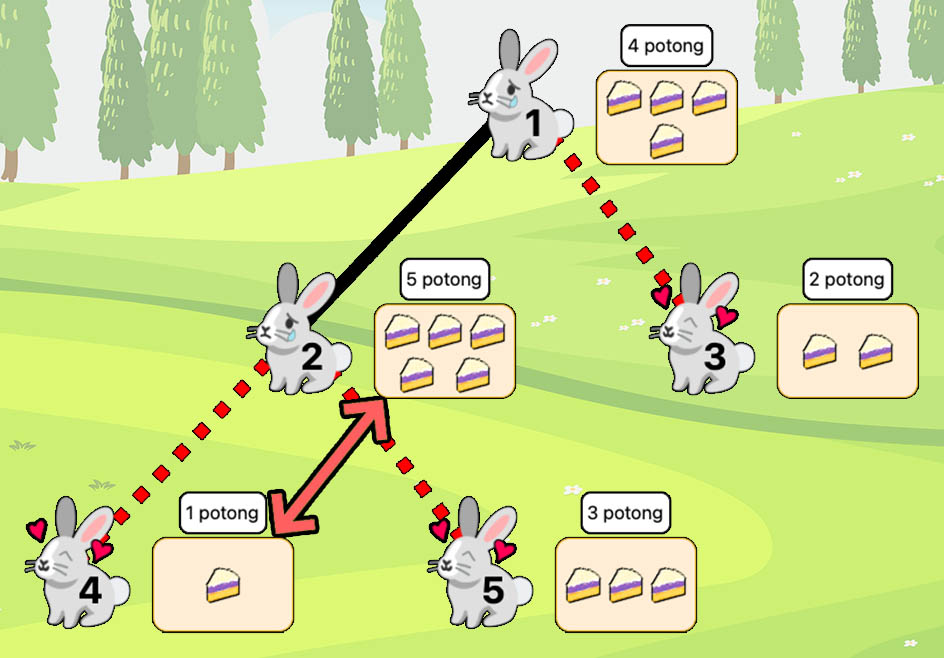
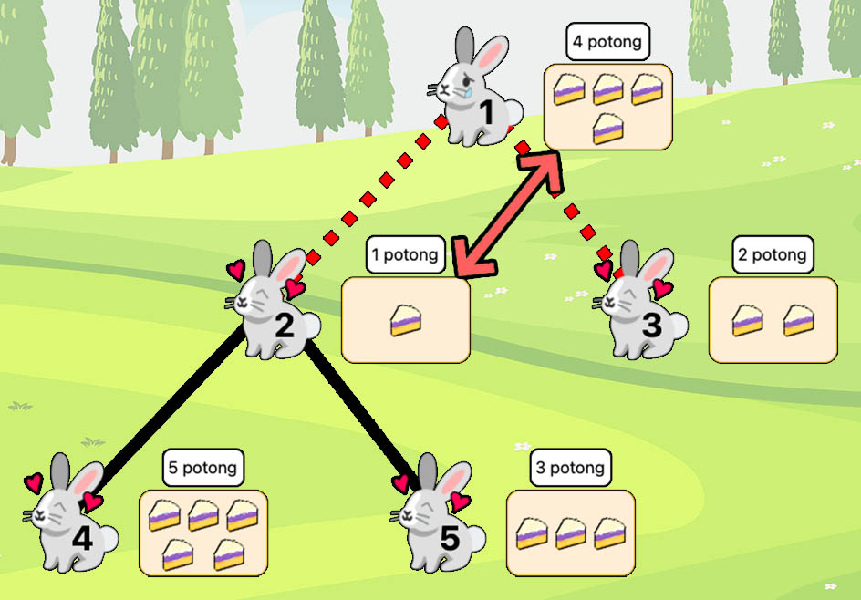
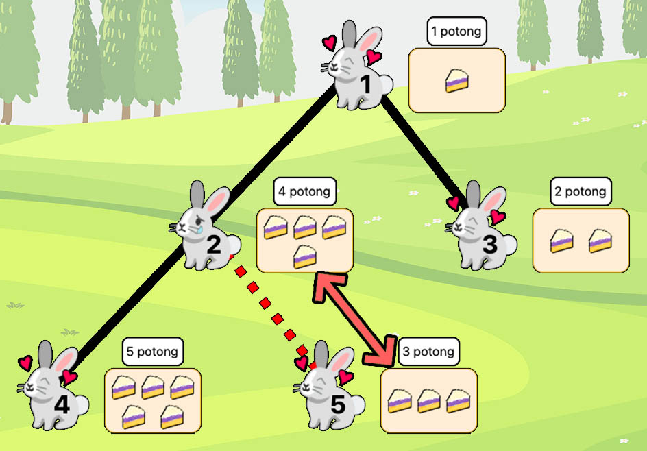
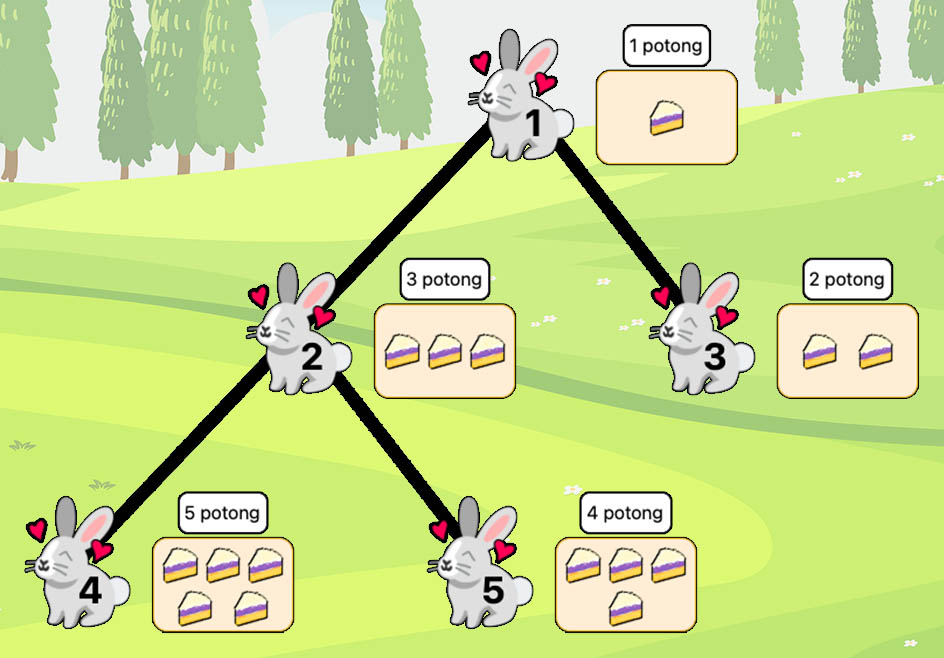

Saat berkunjung ke Taman Safari Bogor, Pak Dengklek menemukan $N$ kelinci abadi asal planet asing yang diberi indeks dari $1$ sampai $N$ dari yang paling tua ke paling muda. Uniknya, spesies kelinci ini berkembang biak tanpa pasangan, sehingga masing-masing dari kelinci ini hanya mempunyai satu induk. Lebih spesifiknya, untuk setiap $2 \leq i \leq N$, kelinci $i$ adalah anak dari kelinci $P_i$, dengan $1 \leq P_i \leq i - 1$.
Pak Dengklek berencana untuk membagi-bagikan makanan khas Bogor, yaitu kue lapis talas, sebagai hadiah kepada kelinci-kelinci tersebut. Pak Dengklek sudah menyiapkan $N$ boks, yang dinomori dari $1$ sampai $N$. Boks ke-$j$ berisi tepat $j$ potong lapis talas. Awalnya, Pak Dengklek membagikan $N$ boks tersebut sehingga setiap kelinci mendapat satu boks.
Pak Dengklek tahu bahwa spesies kelinci ini pintar, suka berbagi, dan sangat menyayangi keturunan-keturunannya. Seekor kelinci dikatakan sedih jika dan hanya jika ada setidaknya satu anaknya yang memiliki boks yang berisi lebih sedikit lapis talas daripada kelinci tersebut.
Setiap detiknya, jika ada setidaknya satu kelinci yang sedih, maka di antara kelinci-kelinci yang sedih, kelinci yang termuda (kelinci dengan indeks terbesar) akan menukarkan boksnya dengan boks anaknya yang berisi lapis talas paling sedikit. Proses penukaran ini dilakukan berulang kali sampai tidak ada kelinci yang sedih.
Tentunya Anda penasaran, apakah memungkinkan bagi Pak Dengklek untuk membagikan $N$ boks tersebut sehingga akan terjadi tepat $K$ buah penukaran?
Diberikan bilangan bulat $Q$. Jika $Q = 0$, Anda hanya perlu melaporkan apakah mungkin untuk memenuhi syarat soal. Jika $Q = 1$, Anda juga harus melaporkan salah satu cara pembagian boks yang mungkin.
Masukan diberikan dalam format berikut:
N K Q P2 P3 … PN
Apabila tidak ada cara pembagian boks yang memenuhi, keluarkan satu baris berisi TIDAK.
Apabila terdapat cara yang memenuhi, maka keluarkan satu baris berisi YA.
Jika $Q = 1$, keluarkan satu baris lagi berisi permutasi dari $[1, 2, \ldots, N]$ yang menyatakan cara pembagian boks yang memenuhi, dengan bilangan ke-$i$ pada permutasinya menyatakan banyaknya lapis talas pada boks yang awalnya dibagikan ke kelinci $i$.
Jika ada lebih dari satu permutasi yang memenuhi, Anda bisa mengeluarkan yang mana saja.
5 3 1 1 1 2 2
YA 4 5 2 1 3
Berikut adalah ilustrasi struktur keturunan $N$ kelincinya.
Jika Pak Dengklek membagi boks-boksnya sehingga banyaknya lapis talas pada boks masing-masing kelinci adalah $[4, 5, 2, 1, 3]$, maka hal-hal berikut akan terjadi:




Totalnya, terjadi tepat $3$ penukaran.
5 3 0 1 1 2 2
YA
Contoh ini mirip dengan contoh pertama, sehingga terdapat cara pembagian boks yang memenuhi. Namun, karena $Q = 0$ di sini, Anda tidak perlu mengeluarkan permutasinya.
8 265 1 1 2 1 3 4 2 1
TIDAK
Tidak ada cara pembagian boks yang memenuhi.